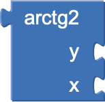
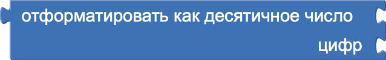
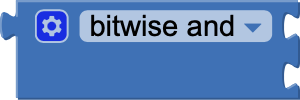
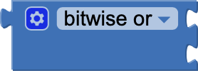
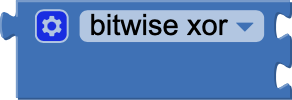

Блоки математики в MIT App Inventor
Блоки математики в MIT App Inventor позволяют выполнять вычисления и работать с числовыми данными. Они обеспечивают возможность выполнять основные арифметические операции, такие как сложение, вычитание, умножение и деление, а также более сложные вычисления, включая использование тригонометрических функций, округление и генерацию случайных чисел.
- random set seed to (установить зерно для случайных чисел): Этот блок задаёт "зерно" (начальное значение) для генерации случайных чисел, чтобы результаты были предсказуемыми при одинаковом "зерне".
- min (минимум): Этот блок возвращает меньшее из двух чисел.
- max (максимум):: Этот блок возвращает большее из двух чисел.
- square root (квадратный корень):Этот блок вычисляет квадратный корень числа.
- abs (абсолютное значение): Этот блок возвращает абсолютное значение числа (модуль).
- neg (отрицательное значение): Этот блок возвращает отрицательное значение числа. Если число уже отрицательное, оно становится положительным.
- log (логарифм): Этот блок вычисляет натуральный логарифм числа (по основанию e).
- e^ (экспонента): Этот блок вычисляет значение e в степени заданного числа.
- round (округление): Этот блок округляет число до ближайшего целого.
- ceiling (потолок): Этот блок округляет число вверх до ближайшего целого.
- floor (пол): Этот блок округляет число вниз до ближайшего целого.
- sin (синус): Этот блок вычисляет синус угла (в радианах).
- cos (косинус): Этот блок вычисляет косинус угла (в радианах).
- tan (тангенс): Этот блок вычисляет тангенс угла (в радианах).
- asin (арксинус): Этот блок вычисляет арксинус числа. Возвращаемое значение находится в диапазоне от -π/2 до π/2.
- acos (арккосинус): Этот блок вычисляет арккосинус числа. Возвращаемое значение находится в диапазоне от 0 до π.
- atan (арктангенс): Этот блок вычисляет арктангенс числа. Возвращаемое значение находится в диапазоне от -π/2 до π/2.
- atan2 (арктангенс двух чисел): Этот блок вычисляет угол в радианах между положительным направлением оси x и точкой, заданной двумя числами.
- convert radians to degrees (перевести радианы в градусы): Этот блок преобразует значение угла из радиан в градусы.
- convert degrees to radians (перевести градусы в радианы): Этот блок преобразует значение угла из градусов в радианы.
- format as decimal (форматировать как десятичное): Этот блок преобразует число в строку с указанным количеством десятичных знаков.
- is a number? (является ли числом?): Этот блок проверяет, является ли указанное значение числом. Возвращает true, если да.
- convert number (преобразовать число): Этот блок преобразует строку в число, если это возможно.
- Bitwise And (побитовая операция И): Этот блок выполняет побитовую операцию "И" над двумя числами.
- Bitwise Or (Inclusive) (побитовая операция ИЛИ): Этот блок выполняет побитовую операцию "ИЛИ" (включающую) над двумя числами.
- Bitwise Or (Exclusive) (побитовая операция XOR): Этот блок выполняет побитовую операцию "исключающее ИЛИ" (XOR) над двумя числами.
- arithmetic mean (среднее арифметическое): Этот блок вычисляет среднее арифметическое списка чисел.
- min in list (минимум в списке): Этот блок возвращает наименьшее число из списка.
- max in list (максимум в списке): Этот блок возвращает наибольшее число из списка.
- mode of a list (мода списка): Этот блок возвращает значение, которое встречается в списке чаще всего.
- geometric mean (среднее геометрическое): Этот блок вычисляет среднее геометрическое списка положительных чисел.
- standard deviation (стандартное отклонение): Этот блок вычисляет стандартное отклонение чисел в списке.
- standard error (стандартная ошибка): Этот блок вычисляет стандартную ошибку чисел в списке, которая показывает степень отклонения среднего.
- Basic Number Block (базовый числовой блок):Этот блок используется для задания числового значения. Число может быть целым или дробным.
- Radix Number Block (блок числа с основанием)::Этот блок используется для задания числа в определённой системе счисления, например, двоичной, восьмеричной или шестнадцатеричной.
- = (равно): Проверяет, равны ли два числа. Возвращает true, если равны, и false, если нет.
- ≠ (не равно): Проверяет, не равны ли два числа. Возвращает true, если числа различны.
- > (больше): Проверяет, больше ли одно число другого. Возвращает true, если первое число больше второго.
- < (меньше): Проверяет, меньше ли одно число другого. Возвращает true, если первое число меньше второго.
- ≤ (меньше или равно): Проверяет, меньше ли одно число другого или равно ему. Возвращает true, если это так.
- ≥ (больше или равно):Проверяет, больше ли одно число другого или равно ему. Возвращает true, если это так.
- + (плюс): Этот блок используется для сложения двух или более чисел.
- - (минус): Этот блок используется для вычитания одного числа из другого.
- * (умножить): Этот блок используется для умножения двух или более чисел.
- / (разделить): Этот блок используется для деления одного числа на другое.
- ^ (в степень): Этот блок используется для возведения числа в степень.
- random integer (случайное целое число): Этот блок возвращает случайное целое число в заданном диапазоне.
- random fraction (случайная дробь): Этот блок возвращает случайное дробное число от 0 до 1.
- modulo (остаток): Этот блок вычисляет остаток от деления одного числа на другое.
- remainder (остаток от деления): Этот блок возвращает остаток от деления, учитывая знак делимого.
- quotient (частное): Этот блок возвращает целую часть результата деления одного числа на другое.
Блоки 2-го уровня первого типа
Установить зерно для случайных чисел (значение)
-– использовать перед генерацией случайных чисел
-– использовать перед генерацией случайных чисел
Блоки 2-го уровня второго типа
Минимум (число1, число2)
-– использовать результат для выполнения действия
-– использовать результат для выполнения действия
Максимум (число1, число2)
-– использовать результат для выполнения действия
-– использовать результат для выполнения действия
Квадратный корень (число)
-– использовать результат для выполнения действия
-– использовать результат для выполнения действия
Абсолютное значение (число)
-– использовать результат для выполнения действия
-– использовать результат для выполнения действия
Отрицательное значение (число)
-– использовать результат для выполнения действия
-– использовать результат для выполнения действия
Логарифм (число)
-– использовать результат для выполнения действия
-– использовать результат для выполнения действия
e^ (число)
-– использовать результат для выполнения действия
-– использовать результат для выполнения действия
Округление (число)
-– использовать результат для выполнения действия
-– использовать результат для выполнения действия
Потолок (число)
-– использовать результат для выполнения действия
-– использовать результат для выполнения действия
Пол (число)
-– использовать результат для выполнения действия
-– использовать результат для выполнения действия
Синус (угол)
-– использовать результат для выполнения действия
-– использовать результат для выполнения действия
Косинус (угол)
-– использовать результат для выполнения действия
-– использовать результат для выполнения действия
Тангенс (угол)
-– использовать результат для выполнения действия
-– использовать результат для выполнения действия
Арксинус (число)
-– использовать результат для выполнения действия
-– использовать результат для выполнения действия
Арккосинус (число)
-– использовать результат для выполнения действия
-– использовать результат для выполнения действия
Арктангенс (число)
-– использовать результат для выполнения действия
-– использовать результат для выполнения действия

Арктангенс (число1, число2)
-– использовать результат для выполнения действия
-– использовать результат для выполнения действия
Перевести радианы в градусы (значение)
-– использовать результат для выполнения действия
-– использовать результат для выполнения действия
Перевести градусы в радианы (значение)
-– использовать результат для выполнения действия
-– использовать результат для выполнения действия

Форматировать как десятичное (число, количество знаков)
-– использовать результат для выполнения действия
-– использовать результат для выполнения действия
(Является ли значение числом?)
-– выполнять действие, если результат true (Является ли значение двоичным?)
-– выполнять действие, если результат true (Является ли значение шестнадцатеричным?)
-– выполнять действие, если результат true
-– выполнять действие, если результат true (Является ли значение двоичным?)
-– выполнять действие, если результат true (Является ли значение шестнадцатеричным?)
-– выполнять действие, если результат true
Преобразовать строку в число (значение)
-– использовать результат для выполнения действия
-– использовать результат для выполнения действия

Побитовая операция И (число1, число2)
-– использовать результат для выполнения действия
-– использовать результат для выполнения действия

Побитовая операция ИЛИ (число1, число2)
-– использовать результат для выполнения действия
-– использовать результат для выполнения действия

Побитовая операция XOR (число1, число2)
-– использовать результат для выполнения действия
-– использовать результат для выполнения действия
Среднее арифметическое (список чисел)
-– использовать результат для выполнения действия
-– использовать результат для выполнения действия
Минимум в списке (список)
-– использовать результат для выполнения действия
-– использовать результат для выполнения действия
Максимум в списке (список)
-– использовать результат для выполнения действия
-– использовать результат для выполнения действия
Мода списка (список)
-– использовать результат для выполнения действия
-– использовать результат для выполнения действия
Среднее геометрическое (список чисел)
-– использовать результат для анализа данных
-– использовать результат для анализа данных
Стандартное отклонение (список чисел)
-– использовать результат для статистического анализа
-– использовать результат для статистического анализа
Стандартная ошибка (список чисел)
-– использовать результат для анализа данных
-– использовать результат для анализа данных
Блоки 3-го уровня
(Число)
-– использовать в вычислениях или действиях
-– использовать в вычислениях или действиях
(Число с основанием)
-– преобразовать или использовать в вычислениях
-– преобразовать или использовать в вычислениях
Если (число1 = число2)
-– выполнять действие
-– выполнять действие
Если (число1 ≠ число2)
-– выполнять действие
-– выполнять действие
Если (число1 > число2)
-– выполнять действие
-– выполнять действие
Если (число1 < число2)
-– выполнять действие
-– выполнять действие
Если (число1 ≤ число2)
-– выполнять действие
-– выполнять действие
Если (число1 ≥ число2)
-– выполнять действие
-– выполнять действие
(число1 + число2)
-– использовать результат в вычислениях
-– использовать результат в вычислениях
(число1 - число2)
-– использовать результат в вычислениях
-– использовать результат в вычислениях
(число1 * число2)
-– использовать результат в вычислениях
-– использовать результат в вычислениях
(число1 / число2)
-– использовать результат в вычислениях
-– использовать результат в вычислениях
(число1 ^ число2)
-– использовать результат в вычислениях
-– использовать результат в вычислениях
Случайное целое число (минимум, максимум)
-– использовать результат в вычислениях
-– использовать результат в вычислениях
Случайная дробь
-– использовать для выполнения действия
-– использовать для выполнения действия
Остаток (число1 ÷ число2)
-– использовать результат для выполнения действия
-– использовать результат для выполнения действия
Остаток от деления (число1 ÷ число2)
-– использовать результат для выполнения действия
-– использовать результат для выполнения действия
Частное (число1 ÷ число2)
-– использовать результат для выполнения действия
-– использовать результат для выполнения действия